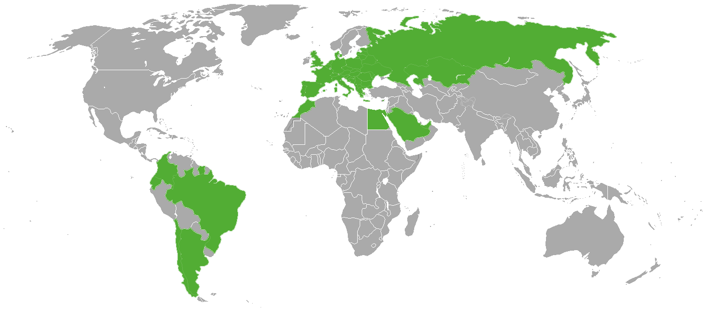

FRUITLEAD jest firmą międzynarodową, działającą na obszarze całej Europy, Afryki i Azji. Posiadamy sieć sprawdzonych dostawców, których regularnie kontrolujemy mając na celu stały rozwój oferty produktów i usług zgodnych z oczekiwaniami naszych klientów. W Polsce, Hiszpanii i Francji posiadamy stałych pracowników, którzy osobiście nadzorując cały proces produkcji, zbioru, przechowania i transportu, dzięki czemu mamy pewność, że zadowolimy nawet najbardziej wymagających odbiorców.
